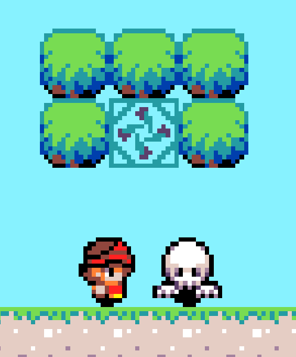
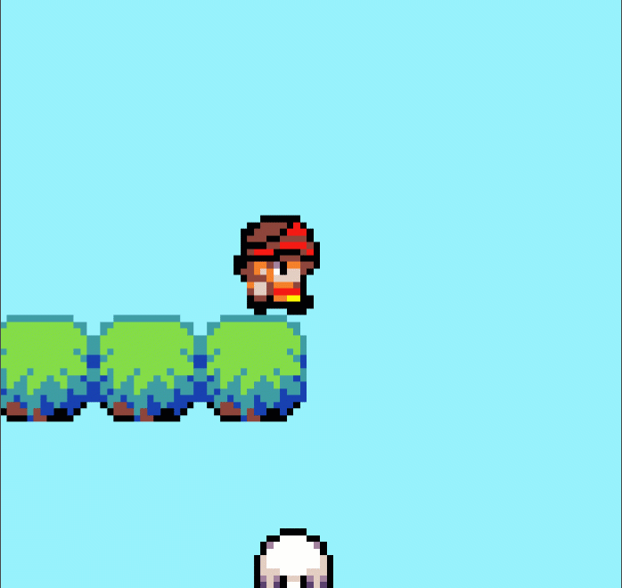
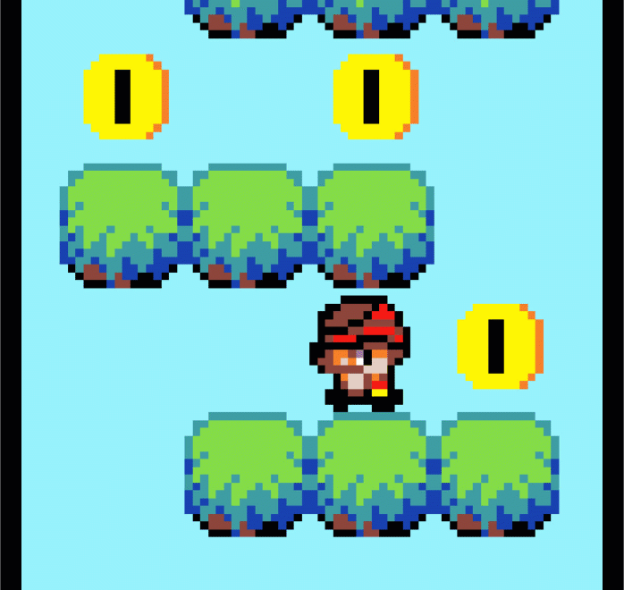

Hello my name is Armaan, I am a coder and I am 10 years old!
Previously, I made games using JavaScript. But recently, I discovered a game engine. This blog post is about how I built my first game using the game engine, called Super Armaan World.
If you would like to follow me on my coding adventures, then you can Join the Journey
My first games were The Gamey Game and The Gamey Game V2.
I made these games using pure JavaScript. This was easy for a while. But I spent most of my time making small features by structuring HTML and CSS. Because of this I had little time to really work on the bigger components like levels, enemies and death animation. So I was only able to make simple games.
If you are having similar struggles, then I would recommend using a game engine. It helps you get a sturdy base to build your game on. Keep reading to learn about how I used a game engine to solve my problems. So you can too!
I participated in a hackathon at Code Ninjas. The hackathon was a coding competition where you made a game to celebrate why you are proud to be Canadian. At the hackathon, we used a game engine called Microsoft Makecode Arcade.
Makecode Arcade supports the tools needed to make my games and has most of the small features built in! This included tilemaps, collision events, animations, velocity X and Y, acceleration X and Y, game controller support, keyboard / mouse support, popup menus, pixel editor and sound editor. With the small features taken care of, I was able to work on the big things like levels, enemies, death animations and boss battles.
The game I made using Makecode Arcade is called Super Armaan World. Super Armaan World is a 2D side-scrolling platform game where you must survive the level, to get to the fire orb at the end. It is a one player game similar to Super Mario World. It has multiple levels where you stop ghosts by jumping on their head, find treasuries and collect coins to make it to a fire orb. You will also have to hit blue gems from underneath to discover what is inside. With 21 levels and 3 boss fights, Super Armaan World is a tough game to beat. It even features evolved enemies that shoot unstoppable bats!.
One of the things Makecode Arcade offers is tilemaps. A tilemap allows you to put down a grid of smaller images instead of one big image. This is useful because one big image takes up more space than a few small images. I utilized tilemaps to make bigger levels and worlds.
A tilemap takes a few images and duplicates them to form the map. For example, if you had a 5000 square big map and used 4 little images that were duplicated, that tilemap takes up the storage space of 4 images. Instead, if you use one big image, then your map will take the space of 5000 small images. Using these principles, the tilemap usually takes up less space than one big image.
Makecode Arcade tilemaps also support walls. If you mark a tile as a wall, then no sprite will be able to pass through it. This is valuable when making 2D side-scrolling platform games.
Initially, my character jumping did not seem realistic.
For one whole month, I couldn't get the jumping speed of the sprite to change while it was in the air. This was until I found AY (Y acceleration). Acceleration increases the speed that something is moving by a specified amount. I used acceleration Y to slow down when the sprite was moving up and speed up when the sprite was moving down.
As a result, my character jumping is much more realistic.
I added moving enemies and I wanted them to kill you if you touch them, but die if you jump on their head. In order to do that, I needed collision events. A collision event checks if two sprites are overlapping so you can program something to happen.
This is the code for a collision event written in JS:
function checkCollision(rect1, rect2) {
const not_touching_x = rect2.d2x > rect1.c1x || rect1.d1x > rect2.c2x;
const not_touching_y = rect1.d1y < rect2.a2y || rect2.d2y < rect1.a1y;
return !(not_touching_x || not_touching_y);
}
The code above works by taking two sprites and comparing the corners to see if they are not touching in the x direction, then in the y direction. At the end, sending true if they are touching in both directions and false if they are not touching in any direction. Because, if they are touching in both x and y directions, they must be overlapping.
It works but is extremely complicated. It is difficult to use, because with multiple sprites you would have to make an overlap function for every sprite.
But luckily Makecode Arcade has collision detection built in!
My game required rotating coins that gave you points. For this I would need to make a coin animate. To animate in pure JS, you would need to change the image multiple times with intervals in between. This makes it hard to stop the animation.
Luckily, Makecode Arcade also has animation built in! So I was able to animate with ease.
The disadvantages of Microsoft Makecode Arcade are that it is a relatively limited game engine, which does not support things like:
For Super Armaan World, these are small things and there are ways to get around them.
Game engines have their advantages and disadvantages. I would recommend trying out Microsoft Makecode Arcade. But maybe it’s not right for you. Other engines could be useful as well.
If you would like to follow me on my coding adventures, then Join the Journey!